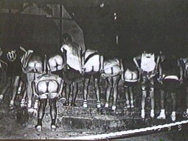

Kinky Fully Mooned

Awaji Mooning 1995.
Photo Gallery
Run 233: 1st July 2007 at Hikone.
"Canada Day, Eh?!"
Hare: Al-kanida.
Help Slimie Limie out here:
Let me know the names
of the presently nameless in the photo captions and I'll gladly add them!
See all
13
pictures (about 977 KB):
Or select them individually from the list below:
- Nagoya H3 and KFMH3 hashers
enjoy
their first (or second? Or third?) post-trail beer.
- Was it a long trail, a hot day, or both that
knackered the pack?
- Sasebo hasher
Sir Trots A Lot
steels himself for the long walk to the beer cooler while an NH3 hasher
is happy she's back from that trip.
- An NH3 hasher and Spooky say,
"no hash paparazzi, please"!
- An NH3 hasher, Spooky, and Daikon Do Me!
prepare to jan-ken-pon for the last crisp.
- Fish Food and Hot Tuna
examine
a small Sprat they found on trail.
- Unusually, Chemical Smile
loses
a smiling contest, against an NH3 hasher.
- Al-kanida goes
ape at the thought of NO VAcation.
- Kiss and Flasher
wonder
where their arms have gone while Hot Tuna stops the Sprat from nibbling on things.
- Sexy Babe #1
assumes the position for one of Al-kanida's "special" down-downs.
- Spooky
sneezes,
sending Urinator into an impromptu Superwoman-like flight.
- NH3 hashers and Chemical Smile
look on
as somebody does something pretty spectacular. Or plain stupid, being a hasher.
- Demon has
that spell-casting glint in her eye; Al-kanida prepares his finger for her ear.
Thank you to Wanda and Al-kanida for the photos.
Run 232: 2nd June 2007 at Umeda.
"A Squirt Around Umeda!"
Hare: Urinator.
See all
11
pictures (about 407 KB):
Or select them individually from the list below:
- Newly-named
Countess Mango drinks a Down-Down.
- Circle over, the Pack is barking to get to the beer garden!
- Meanwhile, Countess Mango gets
cut up when told an
alternative version of her name.
- Look at those as-much-as-you-can-drink party
smiles!
- The KFMH3 formation farting team in practice.
- A monkey—Slimie Limie—and three wise harriettes—Picking Cock, Countess Mango, and Wanda.
- Harriettes Picking Cock and Countess Mango threaten to
fix
the slimie monkey if it misbehaves.
- Supported by Yopparai Unten, Wanda and Muttsuri Cherry prepare for a monster
down-down.
- Wanda and Countess Mango compare
how many
boyfriends they'd like.
- A furtive (fartive?) looking Slimie Limie tries to hide
behind Picking Cock.
- Hash couple Urinator and Al-kanida look suitably engaging.
Thank you to Picking Cock and Al-kanida for the photos.
Run 231: 6th May 2007 at Shin-Kobe.
"Golden Week Wrap-Up!"
Hare: Slimie Limie.
See all
8
pictures (about 451 KB):
Or select them individually from the list below:
- The Pack poses for a Grope Foto while enjoying the Beer Stop at the top of Kobe Ropeway.
- The KFMH3 dancing team, Chemical Smile, Wrecked'Em (visitor from Barnes H3, England), Picking Cock, and Heavy Water,
perform.
- Horse Arse
adds a male presence to the chorus line of Wrecked'Em, China Blues, and
Picking Cock.
- Wrecked'Em and Picking Cock hope to be
discovered so they can give up their day jobs.
- Wrecked'Em is so
overcome
by the modern art that she wishes to take it home with her. Or something.
- Horse Arse and Wrecked'Em
create their own piece of performance art, which they entitle "Buddha".
- Finally, the Pack Moons the Moon. Well, most of 'em, anyway. And more appropriately Buns the Sun since it's daytime. Or Rims the Rain?
- "We're on on way to the On-In, honest!"
claim
Wrecked'Em, Slimie Limie, and Picking Cock.
Thank you to Wrecked'Em for the photos.
Run 223: 10th Sep 2006 at Motomachi.
"Sacrifice the Virgin (Hare...) to the Moon!"
Hare: Yopparai Unten.
See all
8
pictures (about 581 KB):
Or select them individually from the list below:
- Some of the Pack rehydrate in the usual hash manner before the Circle.
- Slimie Limie and Wasabi look on as Crash Mama
gives
Al-kanida an errr... helping hand.
- Al-kanida and Urinator
prepare for Down-Downs, watched by Yopparai Unten and Mankophobia.
- Harriettes try in vain not to
laugh as they discuss the merits of today's harriers.
- Harriers don't
care
while there's beer to be drunk!
- Al-kanida and Slimie Limie
get friendly
at the On-On-In in the now sadly defunct Ryan's Irish Bar.
- Urine (on a surprise visit from England), Urinator, Al-kanida, and Slimie Limie
punish
their livers some more.
- Urinator
reacts
to the news that we've drunk the last drop of Guinness in the pub. On Home!
Thank you to Urine for the photos.
26th April in Bangkok.
"Bankok H3 hashpitality sends Hand Job to hospital..."
Pics: Love Canal.
- Hand Job gets a helping hand from BH3 hounds.
- A quick flash minutes before decorating the inside of Flash's
car.
Run 57: 20th July at Takanohara.
"Hot sayonara to the Doggies in Takanohara."
Hare: Dr. Dog Style.
See all
17
pictures (about 232 KB):
Or select them individually from the list below:
- Roxxoff and Slimie Limie run from outside Dr. Dog
Style's apartment beer-stop.
- Wanda comatose at beer-stop.
- Chinko runs to the finish.
- Snoopy runs too.
- Lolita On-Home after running all the checks.
- Slimie glad to be On-Home.
- Wanda rehydrates at On-Home.
- Preparing for the Circle. It was hot.
I shit thee not.
- Chinko at On-In.
- About to be named Does It With Dogs and Dr. Dog Style.
- RoxxxOff sticks his finger in Slimie's ear.
- RoxxxOff and Sweet PeeCock at On-In.
- Slimie, Roxxx and PeeCock
group photo.
- Slimie Limie at On-In.
- Slimie self portrait.
- Slimie self portrait try 2.
- Wanda at On-In.
Thank you to RoxxxOff for the photos.
Run 59: 17th August at Umeda.
"Wanda's Wanda-ful run."
Hare: Wanda.
See all
8
pictures (about 214 KB).
Or select them individually from the list below:
- Today's hare Wanda
(on the left) and some of the pack before running.
- Forming the Circle at Ings.
- First timers rehydrate in the traditional
way.
- A non-runner Down-Down for Ulysses.
(See below for
animated
versions!)
- Circle-meister Slimie Limie
tries to think of a new Down-Down song.
- Close-up of Phuckwit,
recently
rejected by arrived from Cyprus H3.
- "Santa-Claes comin' to DOWN-DOWN".
That's what it says on his shirt...
- Ulysses finally gets his Down-Down.
Animations!
Special shot of the
Ulysses Infinity Downdown
technique (about 176 KB).
Smaller picture; the
Ulysses Mini Infinity Downdown
technique (about 64 KB).
Run 61: 15th September at Settsu-Motoyama.
"Bank holiday Monday! KFMH3 runs with Kobe H3."
Hares: Bite Size and Shakuhachi Princess.
See all
10
pictures (about 200 KB).
Or select them individually from the list below:
- Penisonic uses his Leg to point to the start
at the Beaver residence.
- Miso Horny checks Picca's underware.
- Whatever he found was funny - now it's Silver Grey's
turn to look.
- Debonair swinger Pro-Blow smiles while Dr. Abe Sada's
got the Blues.
- Triathlon Bob rehydrates after the run.
- Miso Horny prays to "the great god of beer who lives in a white cup" for a
refill.
- Down-Down for GFL, just returned from his epic
Tour de U.S.A.
- "Oh why are we waiting, could be mastur...".
- 'Silver Grey' at KH3, 'Triathlon Bob' at KFMH3; whatever his name,
he's called for a Down-Down!
- C.U., Picca and Dr. Abe Sada tuck into the goodies whilst apparently
two-stepping.
Run 62: 21st September at Sumoto.
"Awaji annual camp and run with Kobe H3"
Hare: RoxxxOff.
See all
7
pictures (about 140 KB).
Or select them individually from the list below:
- Bitesize, our industrious cook,
works on some yakisoba for lunch.
- Bitesize junior-ette Reina
sleeps through her second hash on the beach.
- Sumoto castle viewing-point. Fine place for a
Beer-stop.
- Occupational Hazard, Little Miss Dynamite and Shakuhachi Princess
relax.
- Likewise for Triathlon Bob, Mother Theresa,
Miso Horny and Bobo.
- The pack eagerly line up ready for the Moon-Check.
- No Moon so Bun the Sun!
(See below for
animated
version!)
Animation!
Special animated sequence (about 78 KB) of the
Sumoto Castle Sun-Bunning!
Location is the same as the 1995 monochrome Mooning shot at the top of this page.
Run 63: 5th October at Kyobashi.
"Sweet-Roxxx Cyber-Castle run"
Hare: RoxxxOff.
See all
7
pictures (about 97 KB).
Or select them individually from the list below:
- Snake Seaman, Sweet PeeCock and Nuke (visiting from Tokyo H3)
get ready for some pizza.
- Slimie Limie and Wanda toast the arrival of the pizza.
- Triathlon Bob attends the party naked to promote the full crack H3 concept.
- Lolita describes her 48 km ultramarathon.
(See below for
animated
version!)
- Snake admires his own image on the homepage.
"Who is that handsome guy?" he asked.
- A KH3 T-shirt, as modeled by Lolita's left breast.
It never looked so good!.
- Sweet PeeCock admires the tasteful ceiling frescoes
left from the last pizza party.
Animation!
Special animated sequence (about 59 KB)
Lolita tells all, where she describes the ardures
of a 48 km ultramarathon she ran looking for the KFMH3 start.
Run 74: 11th April at Sukurajima.
"WEDDING BELLS HASH!!!"
Hares: RoxxxOff and Sweet PeeCock.
Photos were not taken on the actual run, but can convey some of the feeling
of the moment.
- The happy couple (about 25 KB).
- The
wedding party with the Tokyo H3 (about 63 KB).
Odds and Sods
Former babysitter of this Web site and Hash Horn
Dr. Dog Style
gets kaleidoscoped. (About 137 KB.)
The KFMH3 Bunny girl,
origin of the great
rice cracker
mystery. (Is that what's stuffed up her ass?)
Unsolved to this day. (About 78 KB.)
C B
B
Web site (occasionally) maintained by Slimie Limie.
This page last interfered with on 1st January 2010
©
1998–2010 Chisaii Neko Productions
{kind=link}
{kind=link}
{kind=link}
{kind=link}
{kind=link}
{kind=link}
{kind=link}
{kind=link}
{kind=link}
{kind=link}
{kind=link}
{kind=link}
{kind=link}
{kind=link}
{kind=link}
{kind=link}
{kind=link}
{kind=link}
{kind=link}
{kind=link}
{kind=link}
{kind=link}
{kind=link}
{kind=link}
{kind=link}
{kind=link}
{kind=link}
{kind=link}
{kind=link}
{kind=link}
{kind=link}
{kind=link}
{kind=link}
{kind=link}
{kind=link}
{kind=link}
{kind=link}
{kind=link}
{kind=link}
{kind=link}
{kind=link}
{kind=link}
{kind=link}
{kind=link}
{kind=link}
{kind=link}
{kind=link}
{kind=link}
{kind=link}
{kind=link}
{kind=link}
{kind=link}
{kind=link}
{kind=link}
{kind=link}
{kind=link}
{kind=link}
{kind=link}
{kind=link}
{kind=link}
{kind=link}
{kind=link}
{kind=link}
{kind=link}
{kind=link}
{kind=link}
{kind=link}
{kind=link}
{kind=link}
{kind=link}
{kind=link}
{kind=link}
{kind=link}
{kind=link}
{kind=link}
{kind=link}
{kind=link}
{kind=link}
{kind=link}
{kind=link}
{kind=link}
{kind=link}
{kind=link}
{kind=link}
{kind=link}
{kind=link}
{kind=link}
{kind=link}
{kind=link}
{kind=link}
{kind=link}
{kind=link}
{kind=link}
{kind=link}
{kind=link}
{kind=link}
{kind=link}
{kind=link}
{kind=link}